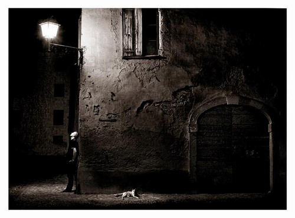
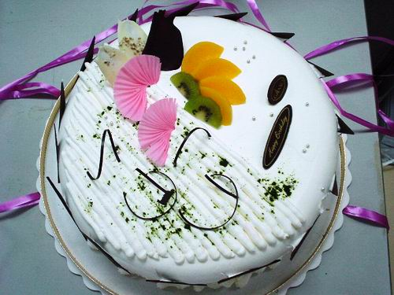
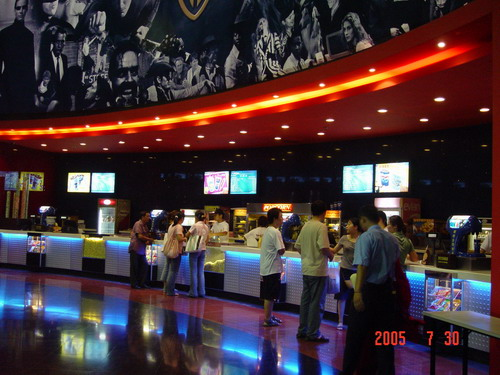
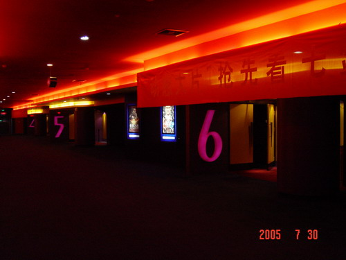
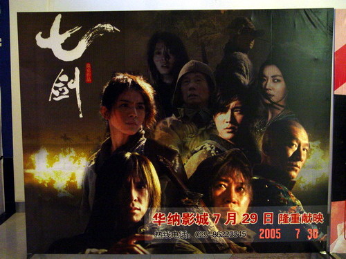

...... @ Aug 19, 2005
爱情很短，遗忘很长。

爱情很短，遗忘很长。

外面电闪雷鸣下着大雨。空调房间亮着橘色的灯光，音乐萦绕，书桌前的静谧，一切显得那么奢侈，相对于工作的白天夜晚的时间格外令人珍惜。
昨天打着前天生日的幌子邀请同事吃饭，本来想小范围的几个人聚聚，结果喊了这个不喊那个，有点过意不去，最想喊的那个居然生病不能参加。上次这么多人一起聚餐是什么时候？怎么也想不起来了。不过来的人都很给面子啦，当时有客人在，老总叫张三李四去吃饭没人去，后来才知道已经被我预订了。5辆车从公司开到酒店的路上甚有意思，打头车本想拐弯却改成直行，造成后面几辆车蔚为壮观的横在马路上，所幸警察叔叔已经下班。
晚餐开始时大家一改记忆中的活跃和爽快，矜持而礼貌地吃着，后来逐渐说笑声才放开来。年龄虽只长了一岁，但大多在为工作为房为车所累，忙造人忙买车忙赚钱......有人居然每月要还2万的按揭款，据说还的头都晕了，这些都是我不曾有过的体会，不知道该不该感到庆幸？我们的年龄都有那份支撑不起的轻快了。
昨天生日，同事买了蛋糕，快下班的时候大家在办公室里一起吃蛋糕，感觉很暖！

有人碰了你的车，交警认定责任是对方，对方要求私了，而你在4S店修车完全免费，这时候你会怎么做？收下私了的钱给对方一个教训？还是不收钱让对方没事儿似的离开？
 晚上央视新闻频道播出《让世界了解你》的节目，嘉宾是山东蓬莱市委书记的刘树琪和法国波尔多(Bordeaux)市的市长雅克·瓦拉德，讨论有关葡萄酒和友好城市交流的话题。我们认识的一个法国朋友在波尔多居住多年，姑且对这个城市有些印象。波尔多位于法国西南部，从巴黎乘高速列车出发到达波尔多相当于南京到上海的时间，大约3个小时路程，波尔多是法国第五大城市，是世界葡萄酒之都。波尔多没有大城市那种浮华，它有着独一无二18世纪的建筑遗产和原汁原味的生活艺术。波尔多葡萄酒去年在瑞典、荷兰、芬兰、丹麦、波兰、德国的销量大幅度减少，但与此同时，波尔多葡萄酒在亚洲的越南、中国和泰国的销量则分别增加了77%、44%和22%。波尔多有各个品种和档次的葡萄酒，法国人均每天一瓶葡萄酒，而中国人并不热衷于饮葡萄酒，啤酒的需求量比葡萄酒要大。
晚上央视新闻频道播出《让世界了解你》的节目，嘉宾是山东蓬莱市委书记的刘树琪和法国波尔多(Bordeaux)市的市长雅克·瓦拉德，讨论有关葡萄酒和友好城市交流的话题。我们认识的一个法国朋友在波尔多居住多年，姑且对这个城市有些印象。波尔多位于法国西南部，从巴黎乘高速列车出发到达波尔多相当于南京到上海的时间，大约3个小时路程，波尔多是法国第五大城市，是世界葡萄酒之都。波尔多没有大城市那种浮华，它有着独一无二18世纪的建筑遗产和原汁原味的生活艺术。波尔多葡萄酒去年在瑞典、荷兰、芬兰、丹麦、波兰、德国的销量大幅度减少，但与此同时，波尔多葡萄酒在亚洲的越南、中国和泰国的销量则分别增加了77%、44%和22%。波尔多有各个品种和档次的葡萄酒，法国人均每天一瓶葡萄酒，而中国人并不热衷于饮葡萄酒，啤酒的需求量比葡萄酒要大。
 事实上饮葡萄酒对身体有很多益处，1992年科学家在商业葡萄酒中首次发现白藜芦醇，（白黎芦醇，化学名称为芪三酚，分子式C14H12O3，分子量228.25，产生于葡萄叶表皮和浆果果皮中，是植株对真菌病害感染反应的结果。）白藜芦醇具有防治冠心病、高血脂症、抗氧化、扫除自由基、抗血栓、抗炎症和抗过敏等作用。另外对于女性葡萄酒还有养颜益寿的功效，葡萄酒中含有各种维生素达六七种之多，其中维生素B12能促进红血细胞成熟，有一定的补血作用。葡萄酒的美容效果极佳，坚持早晚用葡萄酒涂抹皮肤，可以使粗糙的皮肤变得光洁而富有弹性。然而国内劣质葡萄酒很多，在河南省西华县有一些葡萄酒厂，他们生产的葡萄酒标着新疆、通化、烟台生产，连牌子、厂名、厂址都是别人的。这些葡萄酒平均每瓶的价格在一块五毛钱左右，最低的每瓶不到一块钱。所以购买葡萄酒时一定要仔细小心。
事实上饮葡萄酒对身体有很多益处，1992年科学家在商业葡萄酒中首次发现白藜芦醇，（白黎芦醇，化学名称为芪三酚，分子式C14H12O3，分子量228.25，产生于葡萄叶表皮和浆果果皮中，是植株对真菌病害感染反应的结果。）白藜芦醇具有防治冠心病、高血脂症、抗氧化、扫除自由基、抗血栓、抗炎症和抗过敏等作用。另外对于女性葡萄酒还有养颜益寿的功效，葡萄酒中含有各种维生素达六七种之多，其中维生素B12能促进红血细胞成熟，有一定的补血作用。葡萄酒的美容效果极佳，坚持早晚用葡萄酒涂抹皮肤，可以使粗糙的皮肤变得光洁而富有弹性。然而国内劣质葡萄酒很多，在河南省西华县有一些葡萄酒厂，他们生产的葡萄酒标着新疆、通化、烟台生产，连牌子、厂名、厂址都是别人的。这些葡萄酒平均每瓶的价格在一块五毛钱左右，最低的每瓶不到一块钱。所以购买葡萄酒时一定要仔细小心。
节目末了刘书记一边抖动着左腿一边对雅克·瓦拉德市长说“......让蓬莱成为中国的波尔多，让波尔多成为法国的蓬莱......”这话连说两遍，简直是胡话连篇！法国的葡萄酒文化是伴随着法国的历史与文明成长和发展起来的。葡萄酒文化已渗透进法国人的宗教、政治、文化、艺术及生活的各个层面，与人民的生活息息相关。作为世界政治、经济与文化大国，法国葡萄酒文化也影响着全世界人的生活方式与文化情趣。我去过蓬莱，对那里没什么好印象，也许几十年后的蓬莱在葡萄酒生产技术及酒的销售与普及上有可能和现在的波尔多相提并论，但城市文化及葡萄酒文化几十年后估计也危险！你就是你，蓬莱就是蓬莱，做好自己最重要！
回家路过一条不算长的街市，街市的概念在我看来就是那种没有区分快慢车道的护栏，偶有菜市场承载不下的小商小贩占据汽车通道的状况。这样的路况可以使愉快的心情骤然降落到骨盆，可以使抑郁加剧。这些心情也可以出现在车库出口处，没有一个开车的男人主动让一个女子驾驶的汽车转个弯，他们就象抢购便宜货一样争抢着每寸路面，有一两个不知礼教又幸灾乐祸的眼睛和这个面容平静的女子对视N秒后继续自顾自的投入到争抢中，大多男人只是装着没看见......如果这个社会没有人维持秩序、进行管理的话，会是怎样的一个状况？在男人面前女人们千万别把自己当回事儿，别对男人期望太高，因为在我们的教育中没有绅士教育这一课。

2005年6月22日 14:20
......其实，没有什么可以挽留我们向明天走去，不管这离别是轻松还是沉重。
(来自小鱼乐府)
“这两天真他妈想国内。想上金鼎轩或沸腾鱼乡爆撮一把。。想上钱柜吼几噪子。。想找个正牌老中医，看看掉发。。想抓张机票拔腿就走。。。”
读完少爷写的这段时真是好生羡慕，羡慕她的欲望，这也鼓励了我，只等身体好起来再继续ENJOY我的生活。前段时间给妈妈买了全套《人鱼小姐》，老人家一天能看7、8集，偏说阿丽英的性格象我......而我觉得这个女人既多情细腻又倔强自尊，现在的我怎么着都是平淡无奇的心境了。
过几天是我31岁的生日,由于身体不好休假在家几天，我不想让别人看见我憔悴痛苦的样子，别人的同情和左右询问只会增加我的心理负担，我知道自己够坚强，已经这样了，何必去计较！生病期间只要他能陪着我就很满足，每每吃过晚饭我们一起看电视，他喜欢坐在地板上背靠沙发，我坐在沙发上，膝盖搭在他的肩头小腿垂在他的胸前......福不是回头看到的，在我看到的那一刻，它还在！
人会因为有一些，而想有得更多； 也会在失去一些之后，产生完全毁灭的冲动。 只是在这“大得”、“大失”与“大毁”之后， 心里是不是“大平”了呢？ 抑或平的是脸，不是“心”？


照相机离地面很近拍摄的，还是有点我要的效果的~~

模仿哥本哈根的美人鱼铜像造型，回家后看照片才发现美人鱼铜像的双手是交叉的

白色的艇出海，蓝色的海和天还有白色滚滚的云，褐色的岩石......
PS后的效果仿佛油画般色彩浓郁。

我喜欢自己后背的感觉。

牵挂。

蜈支洲岛的海水让人陶醉。
非常遗憾的是忘记调像素大小了，有好些PP都是最小像素拍摄的，NND~~



